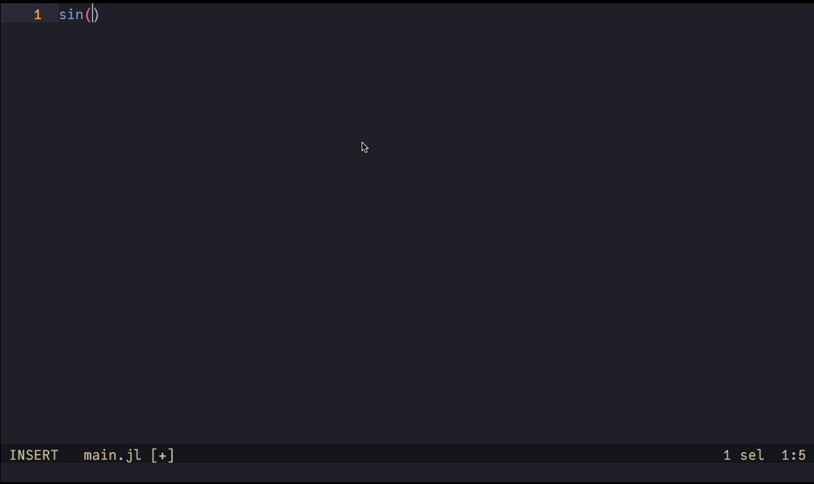

GSoC 2025 Final Report
This blog is the final report of my work during Google Summer of Code 2025, where I worked on the project
This was an exciting project to build a completely new language server that leverages Julia’s latest compiler infrastructure to provide powerful static analysis.
Achievements
Since this project was still in a very early stage, the proposal planned for me to take on a wide range of tasks in close collaboration with my mentor. In practice, I worked on a very broad set of features.
The image shows some of the PRs I opened for JETLS itself.
As can be seen from the number of comments, my mentor
Major Contributions
Here are some of the major features contributed I made:
Implementation of Go to Definition for methods

https://github.com/aviatesk/JETLS.jl/pull/61 - JETLS can also jump to functions defined by
@evalmacro :) - In the future, we plan to extend this so that only the methods that could actually be called are suggested, based on type analysis.
Implementation of Go to Definition for local bindings
https://github.com/aviatesk/JETLS.jl/pull/115 - This is where JuliaLowering played a remarkable role. It is great that such a feature can be implemented with relatively little code by leveraging JuliaLowering.
Implementation of a basic configuration system
https://github.com/aviatesk/JETLS.jl/pull/185 - It also allows dynamic changes after startup.
- In the future, We plan to
publish a schema so that completion and validation can be provided in many editors.
Implementation of recursive analysis (WIP, but close to completion at the time of writing so it may be merged when this is published)
https://github.com/aviatesk/JETLS.jl/pull/236 - The current analysis routines of JET did not have the ability to recursively locate and analyze the source code of packages. My contribution was to extend JET with such functionality and integrate it into JETLS.
- This required a detailed study of Julia’s package loading mechanism, which was quite challenging.
Some UI improvements
While analysis and various infrastructure are important, even small UI improvements can greatly affect the usability of a language server.
Additional details
Including to these, many PRs—including bug fixes and contributions to related packages—were merged :)
merged PRs
https://github.com/aviatesk/JETLS.jl/pull/236 https://github.com/JuliaStrings/InlineStrings.jl/pull/88 https://github.com/aviatesk/JETLS.jl/pull/228 https://github.com/c42f/JuliaLowering.jl/pull/41 https://github.com/aviatesk/JETLS.jl/pull/223 https://github.com/c42f/JuliaLowering.jl/pull/37 https://github.com/aviatesk/JETLS.jl/pull/206 https://github.com/aviatesk/JETLS.jl/pull/205 https://github.com/aviatesk/JETLS.jl/pull/185 https://github.com/aviatesk/JETLS.jl/pull/148 https://github.com/aviatesk/JETLS.jl/pull/145 https://github.com/aviatesk/JETLS.jl/pull/143 https://github.com/aviatesk/JETLS.jl/pull/139 https://github.com/aviatesk/JETLS.jl/pull/132 https://github.com/aviatesk/JETLS.jl/pull/123 https://github.com/aviatesk/JETLS.jl/pull/115 https://github.com/aviatesk/JETLS.jl/pull/104 https://github.com/aviatesk/JETLS.jl/pull/79 https://github.com/aviatesk/JETLS.jl/pull/77 https://github.com/aviatesk/JETLS.jl/pull/72 https://github.com/aviatesk/JETLS.jl/pull/69 https://github.com/aviatesk/JETLS.jl/pull/61 https://github.com/aviatesk/JETLS.jl/pull/56 https://github.com/aviatesk/JETLS.jl/pull/40 https://github.com/aviatesk/JETLS.jl/pull/31 https://github.com/aviatesk/JETLS.jl/pull/11 https://github.com/aviatesk/JETLS.jl/pull/10
As noted earlier, this language server leverages Julia’s new compiler infrastructure. Deepening my understanding of these systems through this development was itself a great outcome for me.
It was also valuable that I was able to submit bug-fix patches for that infrastructure during the project.
(ex:
My understanding of both the Julia compiler and JET.jl has also grown significantly.
In particular, the many discussions I had with aviatesk about “virtual global execution” in this LS were crucial to its development.
Remaining work
As described in the
However, there are still major challenges in performance and stability before it becomes practical. I am highly interested in addressing these, including applying known techniques for faster startup and researching cache strategies best suited to this LS.
Conclusion
This project has the potential to greatly impact the Julia ecosystem, and I am proud to be part of it.
I would like to express my sincere gratitude to my mentor aviatesk and the Julia community for their warm guidance throughout GSoC. I also thank my university friends, lab seniors, and advisor for supporting me in various ways.
I will continue to contribute to the success of this project.